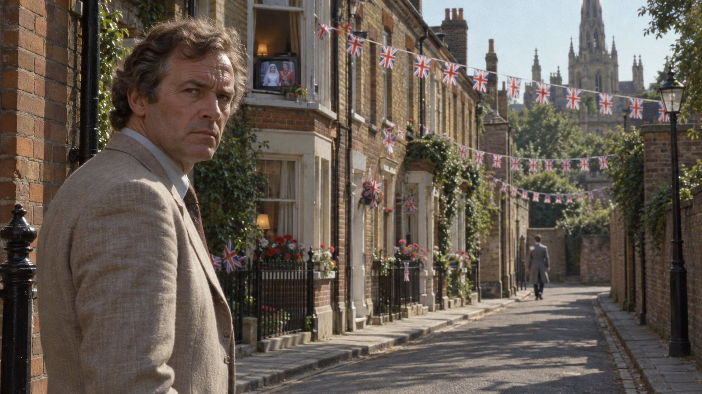

Свидетель

Глава первая
Всему свое время, и время всякой вещи под небом.
— Екклесиаст, 3:1
В среду, двадцать девятого июля тысяча девятьсот восемьдесят первого года, около десяти утра, Оксфорд начал пустеть так, как пустеет зал перед поднятием занавеса, то есть не постепенно, а сразу и со всех сторон, и инспектор уголовной полиции Морс, который в тот день был выходным вместе со всей страной, наблюдал это из окна своей квартиры в Северном Оксфорде с чувством, которое сам он назвал бы брезгливостью, хотя вернее было бы назвать его одиночеством, если бы Морс позволил кому-нибудь так его называть.
Страна женила наследника престола. Принц Уэльский брал в жёны леди Диану Спенсер, двадцатилетнюю воспитательницу детского сада, и правительство по этому случаю объявило среду выходным днём, так что в половине одиннадцатого вся Англия, от Корнуолла до Камберленда, сидела перед телевизорами, и в Оксфорде, городе, который любит считать себя выше общих чувств, сидели перед телевизорами ровно так же, как везде, с той лишь разницей, что здесь потом говорили, будто смотрели ради архитектуры собора Святого Павла. Улицы накануне увешали флажками, на Уолтон-стрит и в переулках Джерико выставили на мостовую столы для уличных праздников, накрытые клеёнками, под клеёнками стояли сэндвичи, а между столами ходили дети в бумажных коронах, которых матери отправили на улицу, чтобы те не мешали смотреть.
Морс не смотрел. Телевизор у него был, маленький, чёрно-белый, купленный ради крикета и забытый ради музыки, и в другой день он мог бы включить его хотя бы ради того, чтобы послушать орган, но в этот день его раздражало всё, начиная с того, что соседи сверху включили свой телевизор на полную громкость ещё в девять, и кончая тем, что сам он не мог бы объяснить, почему не хочет смотреть то, что смотрят все. Против королевской семьи он ничего не имел, против свадеб имел немного, по причинам, о которых не говорил, и к сорока трём годам у него сложилось неопределённое, но стойкое убеждение, что если двадцать восемь миллионов человек одновременно смотрят на одно и то же, то кто-то один должен смотреть в другую сторону, хотя бы для равновесия.
В десять с чем-то он надел лёгкий пиджак, потому что день обещал быть тёплым и уже был солнечным, и вышел, не решив куда, что для Морса означало, что ноги поведут его в сторону какого-нибудь паба, а голова будет делать вид, что идёт гулять.
Город он знал наизусть, и наизусть же знал его звуки в любое время суток: шорох велосипедов по Вудсток-роуд в восемь утра, автобусы у Карфакса, перекличку колоколов по воскресеньям, тишину августовских вечеров, когда студенты разъезжаются и город на месяц достаётся тем, кто в нём живёт. Но этого звука он не слышал никогда. Из каждого открытого окна, а жара открыла все окна, доносился один и тот же голос, мягкий, почтительный голос комментатора Би-би-си, и поскольку окна были на разной высоте и на разном расстоянии, голос шёл за Морсом по улице, отставая от себя на доли секунды, как эхо в соборе, и выходило, что весь Северный Оксфорд превратился в один огромный неф, по которому шёл единственный прихожанин, не желавший слушать службу.
На Вудсток-роуд не было ни одной машины. Морс постоял на краю тротуара, по привычке посмотрел направо и налево и перешёл дорогу посередине, медленно, почти вызывающе, как переходят улицу во сне. Где-то впереди залаяла собака, и лай прозвучал так громко, что Морс оглянулся. Рыжий кот на крыльце смотрел на него с осуждением человека, у которого из-под носа увели публику.
Около одиннадцати он вошёл в паб на углу одной из улиц Джерико, в котором бывал не чаще раза в месяц и который выбрал именно поэтому: там его не знали. Паб был полон, но полон странно, потому что все двадцать с лишним человек сидели лицом к одной стене, где на кронштейне под потолком висел телевизор, и когда Морс подошёл к стойке и попросил пинту горького, бармен налил её, не глядя, и не глядя взял деньги, а старик за ближним столом обернулся и шикнул, потому что как раз в эту минуту на экране к ступеням собора подъехала стеклянная карета.
Морс выпил пинту стоя, у стойки, в спину всем. Пиво было хорошее, лучше, чем он ожидал от этого места, и он отметил это про себя с тем удовольствием, которое за два последних года стало у него почти профессиональным: с весны семьдесят девятого он снова пил, пил регулярно и пил, как он сам себе объяснял, не от горя и не от скуки, а потому что пиво помогало ему думать. Объяснение это было верным наполовину, и Морс об этом знал, но вторую половину он держал при себе, как держат при себе фамилию неудобного родственника.
Невеста на экране вышла из кареты, и весь паб выдохнул разом, а кто-то из женщин сказал «ох», как говорят над младенцем. Платье было огромное, цвета слоновой кости, и шлейф тянулся за невестой по ступеням так долго, что Морсу показалось, будто она тащит за собой весь собор. Он поставил пустую кружку на стойку и вышел, и никто, кроме бармена, этого не заметил, а бармен заметил только потому, что надо было убрать кружку.
После паба улица показалась ещё пустее. Морс пошёл к Уолтон-стрит, мимо кирпичных рабочих домиков Джерико, построенных когда-то для рабочих типографии и литейного завода, а теперь понемногу скупаемых преподавателями, которые красили двери в цвета, каких рабочие не знали. Двери стояли распахнутыми, из каждой несло телевизором, и Морс поймал себя на том, что идёт в такт органу, который играл одновременно в пятидесяти гостиных.
Потом орган смолк, и заговорил священник, и Морс понял, что началось венчание, потому что голоса в окнах вдруг стали тише, как будто сами телевизоры затаили дыхание. Он остановился у угла, там, где от Уолтон-стрит отходил узкий переулок к задам домов, достал сигареты, вспомнил, что бросил, и убрал пачку обратно. Было, как он потом с некоторым трудом восстановит, около половины двенадцатого, может быть, чуть раньше.
И тут засмеялась вся улица.
Это был не громкий смех, не тот, каким смеются в пабе над анекдотом, а короткий, удивлённый, тёплый смешок, вырвавшийся одновременно из всех окон, справа и слева, сверху и снизу, как будто улица была одним человеком и этого человека кто-то легонько пощекотал. Морс поднял голову. Он не знал, чему смеются, и на мгновение ему стало не по себе, как бывает не по себе человеку, вошедшему в комнату, где только что рассказали анекдот про него.
В эту же секунду, и Морс запомнит её именно потому, что она совпала со смехом, из-за угла впереди, со стороны Уолтон-стрит, быстро вышел мужчина и, не оглядываясь, свернул в переулок. Он был в визитке, то есть в том длинном сером сюртуке с закруглёнными полами, который англичане надевают на свадьбы, скачки в Аскоте и больше никуда, в серых брюках в полоску, и в петлице у него белела гвоздика. Шляпы не было. Мужчина шёл быстро, но не бежал, шёл, как идёт человек, опаздывающий на что-то, куда неприлично опаздывать, и Морс видел его не больше трёх секунд: спину, затылок, светлый или, может быть, рыжеватый, полоску белого цветка над лацканом, когда тот поворачивал за угол.
Морс подумал, если вообще можно назвать это мыслью, что даже здесь, в Джерико, кто-то нарядился к свадьбе, как будто его позвали в собор, и что человек этот, вероятно, опаздывает к соседям, у которых телевизор побольше. Мысль была ленивая и немного презрительная, и защищать её незачем. Через два дня Морс отдал бы многое, чтобы в ту секунду подумать что-нибудь другое, или хотя бы пройти за угол и посмотреть, куда ведёт переулок. Но он не пошёл. Он постоял, послушал, как улица снова притихла и как священник в пятидесяти окнах что-то спрашивает у жениха, и пошёл дальше, в сторону канала, к Порт-Медоу, туда, где не было окон.
На Порт-Медоу, огромном общинном лугу к северо-западу от города, на котором оксфордские горожане с незапамятных времён пасут лошадей и коров и который никто никогда не распахивал, было пусто и жарко. Лошади стояли у воды, обмахиваясь хвостами, и ни одна не интересовалась, кто там на ком женится. Морс дошёл до реки, сел на тёплую траву, снял пиджак и некоторое время смотрел на воду, ни о чём не думая, что удавалось ему редко и всегда ненадолго. Колокола в городе за его спиной молчали: они, как и все, ждали своей очереди.
Колокола ударили, когда он уже шёл обратно. Сначала один, потом другой, потом все, сколько их было, и Морс понял, что в Лондоне кончилась служба и молодые вышли на ступени собора. Оксфорд звонил так, будто это его собственная свадьба, и Морс, который любил колокола больше, чем людей, впервые за день улыбнулся.
Во втором пабе, на северном краю Джерико, был один бармен, и тот стоял к Морсу спиной, задрав голову к телевизору. На экране был балкон Букингемского дворца, внизу, на площади, стояло столько людей, что площади не было видно, и когда Морс подошёл к стойке, молодые на балконе как раз поцеловались, и площадь закричала, и бармен сказал «вот это да», не оборачиваясь, и только потом заметил, что в пабе кто-то есть.
— Пинту горького, — сказал Морс.
— Сию минуту, сэр, — сказал бармен, наливая и косясь на экран. — Вы смотрели?
— Нет, — сказал Морс.
Бармен посмотрел на него так, как посмотрел бы на человека, признавшегося, что никогда не видел моря, и поставил перед ним кружку. Часы над стойкой показывали десять минут второго. Морс отнёс пиво к столу у окна, сел спиной к телевизору и стал пить медленно, глядя на пустую улицу, по которой ветер гонял бумажный флажок с портретом жениха, и ему не пришло в голову, что этот день он запомнит лучше, чем любой из двадцати восьми миллионов, смотревших свадьбу. Свидетелями редко становятся по собственному желанию.
Глава вторая
Therefore if any man can shew any just cause, why they may not lawfully be joined together, let him now speak, or else hereafter for ever hold his peace.
(Итак, если кто может указать законную причину, по которой они не могут быть по закону сочетаны, пусть скажет сейчас или впредь молчит навеки.)
— Книга общих молитв (1662), чин венчания
В то самое время, когда инспектор Морс переходил пустую Вудсток-роуд посередине, как человек, у которого нет ни планов, ни свидетелей, в Хэдингтоне, на другом конце города, за рекой Черуэлл и вверх по холму, в доме Рональда и Айрис Кендалл собралось двадцать человек, и у каждого из них планы были расписаны по минутам.
Кендаллы тоже женили сына. Младший, Пол, двадцати восьми лет, брал в жёны Сару Уэйкфилд, дочь строительного подрядчика из Каули, и венчание было назначено на половину третьего в приходской церкви в старом Хэдингтоне, в трёх улицах от дома. Дату выбрала Айрис, и выбрала её в тот самый день прошлой зимой, когда Дворец объявил об обручении принца, потому что, как она объяснила семье, счастливее дня не будет во всём веке, а когда ей возразили, что в такой день никто не придёт на чужую свадьбу, ответила, что именно поэтому венчание будет после обеда, а до обеда все вместе посмотрят ту, настоящую. Так королевская свадьба стала чем-то вроде генеральной репетиции свадьбы Кендаллов, и ничто так не характеризует Айрис Кендалл, как то, что именно так она это и воспринимала.
Она же велела мужчинам надеть визитки с утра. Визитки брали напрокат в городе, все одинаковые, серые, с брюками в тонкую полоску, и Айрис рассудила, что раз уж за них заплачено за весь день, то и смотреть на принца приличнее в том же, в чём он сам. Мужчины поворчали и надели. Бутоньерки, шесть белых гвоздик с веточкой папоротника и жемчужными булавками, цветочница привезла накануне вечером, потому что в среду не работала ни одна лавка в городе, и Айрис сама приколола их жениху, старшему сыну Мартину, который был свидетелем жениха, мужу Рону, своему брату Фрэнку и двум племянникам, которые должны были в церкви рассаживать гостей.
На старом английском венчании свидетель жениха, best man, человек не случайный: он держит кольца, он произносит речь на обеде, он следит, чтобы жених не сбежал и не напился, и он же вместе с подругой невесты расписывается в церковной книге, удостоверяя, что брак заключён правильно и при нём. Мартину Кендаллу было тридцать три, он был на пять лет старше брата, выше его на полголовы, спокойнее на целую жизнь и с двадцати лет вёл семейный гараж на Лондон-роуд, тот самый, который отец открыл в пятидесятых и над которым до сих пор висела вывеска «Кендалл и сыновья», хотя один из сыновей служил в страховой конторе в Рединге и масло из мотора никогда в жизни не сливал.
Телевизор взяли напрокат тоже, цветной, с большим экраном, и поставили в гостиной на тумбочку, передвинув диван и принеся стулья из столовой, с кухни и от соседей, так что к десяти часам гостиная превратилась в маленький зрительный зал с двумя рядами кресел и галёркой из табуреток у стены. Кто где сидел, стоит перечислить точно.
В первом ряду, на диване, сидели Айрис, её сестра Дорин и старая миссис Кендалл, мать Рона, восьмидесяти трёх лет, которая помнила коронацию Георга Пятого и была недовольна всеми последующими. Во втором ряду, на стульях, Рон, его шурин Фрэнк с женой, племянники и жених Пол, который всё время поправлял галстук и глядел на часы, словно собственная свадьба могла начаться без него. Мартин сидел с краю второго ряда, ближе всех к двери в коридор, и когда Айрис потом спросили, почему там, она не смогла вспомнить, сам ли он сел или это она его туда посадила, чтобы было кому бегать на кухню. На табуретках у стены сидели тётки, кузины и соседка миссис Хобдей, которую никто не звал, но у которой был только чёрно-белый телевизор, а детей в гостиную не пускали вовсе, и дети, которых было трое, сначала обиделись, а потом обнаружили, что целая улица осталась в их распоряжении.
Ровно в четверть двенадцатого, когда невеста в Лондоне уже шла по проходу собора, Фрэнк, недавно купивший «полароид», фотоаппарат, который выталкивает готовую карточку через минуту после снимка, встал спиной к экрану, чем вызвал всеобщее возмущение, и снял весь зал. На снимке, который потом прислонили к часам на камине, двадцать человек смотрят не в объектив, а вправо от него, куда-то за плечо Фрэнка, с одинаково открытыми ртами, и у всех мужчин в петлицах белеют гвоздики. Мартин на снимке есть, с краю, чуть смазанный, потому что повернул голову.
Потом в соборе запели, и в гостиной Кендаллов запели тоже, вполголоса, смущаясь собственных голосов, и Айрис плакала, и Дорин плакала, и старая миссис Кендалл сказала, что при Георге Пятом таких платьев не шили. Когда невеста дошла до алтаря и в соборе запели первый гимн, Мартин встал и сказал, что принесёт льда для шампанского, потому что шампанское стояло в ванне с холодной водой и нагревалось быстрее, чем таяли сомнения Рона в том, что стоило его покупать, и Айрис махнула на него рукой, не отрываясь от экрана, и никто из двадцати не посмотрел ему вслед.
Когда невеста на экране перепутала имена жениха, в гостиной засмеялись так же, как смеялась в эту секунду вся страна, и Айрис сказала «бедная девочка» с такой нежностью, с какой никогда не говорила о Саре Уэйкфилд, а полминуты спустя смеялись уже над принцем, который сбился на словах про мирское добро, и старая миссис Кендалл сказала, что ничего удивительного, все мужчины в этом месте спотыкаются. Кто принёс лёд и когда, потом никто с уверенностью сказать не смог, но шампанское к балкону было холодным.
Жара к полудню стала невыносимой для людей в сукне, и первым не выдержал Рон: он снял визитку, повесил её на крючок в прихожей, рядом с чужими плащами и сумками, и сидел дальше в жилете, не обращая внимания на взгляды жены. Обратную процессию, когда молодые ехали в открытом экипаже от собора к дворцу, смотрели уже вполглаза, с тарелками на коленях, потому что Айрис решила, что лошади есть лошади, а сэндвичи засыхают. Кто в это время сидел в гостиной, а кто ходил между гостиной и кухней с подносами, потом тоже никто не помнил, кроме того, что ходили все.
В десять минут второго, когда на балконе Букингемского дворца принц поцеловал невесту, а толпа на площади заревела так, что у телевизора задребезжал динамик, Рон открыл первую бутылку, и пробка ударила в потолок, и все двадцать человек стали целоваться вслед за молодыми, а Фрэнк сделал второй снимок. На нём те же двадцать человек поднимают бокалы, и на этот раз смотрят в объектив, и Мартин стоит рядом с братом, положив ему руку на плечо, и улыбается шире всех. В петлице у него белая гвоздика, и снимок, как и первый, стоит запомнить.
В половине третьего в церкви в старом Хэдингтоне было душно и тесно, как на любой свадьбе, от которой ждут больше, чем она в состоянии дать. Сара Уэйкфилд опоздала на десять минут, потому что и в доме Уэйкфилдов смотрели балкон, и вошла под руку с отцом, Деннисом Уэйкфилдом, крупным краснолицым человеком, который строил дома всему Каули и не скрывал, что мог бы купить всех Кендаллов вместе с гаражом. Айрис, оглядев семью в первом ряду, зашипела на мужа, потому что у Рона не было гвоздики, и Рон шёпотом ответил, что, видно, потерял её в саду, когда выходил курить, и что никто, кроме неё, этого не заметит. Он был прав, и прав простояло два дня.
Священник, пожилой и неторопливый, читал по старой книге, потому что Айрис настояла на старой, и когда дошёл до слов о том, что, если кто знает законную причину, по которой эти двое не могут быть сочетаны, пусть скажет сейчас или молчит вовек, сделал ту паузу, которую делают все священники Англии и которая всегда кажется слишком длинной. В церкви кто-то кашлянул и смутился. Никто ничего не сказал, и священник, чуть заметно улыбнувшись, продолжил. Свидетель жениха стоял справа от брата, прямо, с кольцами в ладони, и тоже молчал.
Потом в ризнице, под взглядом викария, Пол и Сара расписались в церковной книге, и Пол в графе «состояние» написал то, что считал правдой, а вслед за ними расписались два свидетеля, Карен Уэйкфилд, сестра невесты, круглым школьным почерком, и Мартин Кендалл, твёрдо и разборчиво, как расписываются на накладной за запчасти. Викарий промокнул чернила и поздравил всех с дважды счастливым днём, и все засмеялись, и свидетель жениха тоже.
В это время в Джерико, в гостиной скромных меблированных комнат на Уолтон-стрит, сама с собой разговаривала никем не выключенная телевизионная студия, и никто её не слушал.
Глава третья
Верный свидетель не лжет; а лживый свидетель наговорит много лжи.
— Книга притчей Соломоновых, 14:5
Миссис Гладис Пратт сдавала комнаты на Уолтон-стрит двадцать два года, с тех пор как похоронила мужа, и за эти двадцать два года в её доме не случалось ничего хуже пары студентов, съехавших без оплаты, и одного американского профессора, который прожёг сигарой покрывало и в искупление присылал ей открытки к каждому Рождеству вот уже девять лет. В доме было четыре комнаты для жильцов, завтрак в цену и гостиная на первом этаже с телевизором, двумя креслами и табличкой «Жильцов просят выключать телевизор», и именно табличка была первым, что миссис Пратт заметила, когда в сорок минут четвёртого вернулась с уличного праздника с блюдом из-под трайфла и услышала из гостиной голоса.
Она вошла, чтобы сделать замечание. Жилица из третьей комнаты, молодая шотландка, которая приехала накануне и сняла комнату на три ночи, сидела в кресле лицом к телевизору, спиной к двери, и миссис Пратт успела сказать «ну как, дорогая, всё посмотрели?», прежде чем обошла кресло. Блюдо из-под трайфла не разбилось, потому что упало на ковёр, и потом миссис Пратт как-то удивительно часто к этому возвращалась, словно целое блюдо было единственным, что в этом дне ещё можно было спасти.
В участке на Сент-Алдейтс в праздничный день дежурили те, кому не повезло, и самым невезучим из них оказался старший инспектор Стрейндж, которого вызвали с уличного праздника на его собственной улице, из-за стола, за которым он как раз собирался произнести тост. Стрейндж выслушал дежурного, посмотрел на жену, на стол, на детей в бумажных коронах и позвонил Морсу, потому что Морс был единственным человеком в Оксфорде, которого в этот день не жалко было оторвать от торжества. Морс взял трубку на втором гудке, выслушал и спросил, какой дом на Уолтон-стрит.
— У тебя там новый сержант, — сказал Стрейндж. — Флетчер. Перевёлся к нам из Банбери две недели назад, пока временно. Будь с ним поласковее, чем с прошлым.
— С прошлым я был ласков, — сказал Морс.
— Именно, — сказал Стрейндж и повесил трубку.
Сержант Дэнни Флетчер встретил Морса на крыльце миссис Пратт. Ему было двадцать восемь, у него были аккуратные усы, аккуратный пробор и то выражение лица, какое бывает у молодых людей, искренне радующихся своей работе и ещё не знающих, что это проходит. На лацкане его синего пиджака был приколот маленький бумажный флажок, и когда Морс посмотрел на флажок, Флетчер покраснел, но флажка не снял, и Морс записал это в его пользу.
— Смотрели? — спросил Морс.
— В столовой участка, сэр. С самого начала. Дежурный разрешил, если телефон слышно. — Флетчер помедлил. — А вы, сэр?
— Нет, — сказал Морс во второй раз за день и прошёл в дом.
В гостиной всё ещё работал телевизор. Его никто не выключил, потому что миссис Пратт боялась к нему подходить, а первый констебль, прибывший на вызов, был достаточно опытен, чтобы ничего не трогать, и теперь на экране два жизнерадостных человека в студии обсуждали, когда молодые выедут к вокзалу Ватерлоо и какая на невесте будет шляпка. Женщина в кресле смотрела на них широко открытыми глазами, и в первую секунду Морсу показалось, что она просто очень внимательно слушает.
Морс попросил выключить звук. Флетчер выключил его через носовой платок, и на экране два человека продолжали беззвучно радоваться, и от этого в комнате стало так тихо, что стало слышно, как на улице, за три дома, кто-то заводит на аккордеоне «Боже, храни королеву» и сбивается на третьей строке.
Её звали, если верить книге жильцов в прихожей, мисс Ш. Макрей, и прибыла она из Глазго. Ей было не больше тридцати, скорее меньше, у неё были тёмно-рыжие волосы, собранные в практичный узел, и руки женщины, которая работает руками: коротко остриженные ногти без лака, сухая кожа у костяшек, как бывает у тех, кто по сто раз в день моет руки. На шее у неё был шёлковый шарфик, синий с мелкими белыми цветами, и шарфик был затянут так, как никто не затягивает шарфики на себе.
На столике рядом с креслом стояли две чашки на блюдцах. Из одной пили, и на краю остался след помады, бледный, почти бесцветный, а вторая была полна до краёв, и чай в ней подёрнулся коричневой плёнкой. Морс долго смотрел на вторую чашку.
— Она ждала кого-то, — сказал Флетчер. — Или кто-то пришёл, и она предложила чаю.
— И он не стал пить, — сказал Морс. — Либо он не любит чай, что для англичанина подозрительно, либо он с самого начала знал, что на чай не останется.
Доктор де Брин приехал в пять и был в таком скверном настроении, в каком Морс видел его редко: его оторвали от того самого телевизора, на который он, как он уверял, всё равно не смотрел, а только сидел рядом из уважения к жене. Он провёл у кресла двадцать минут, потом выпрямился и снял перчатки.
— Задушена своим же шарфом, сзади, пока сидела, — сказал он. — Сопротивлялась недолго, потому что не ожидала. Под ногтями ничего, так что и не надейся. Время смерти между одиннадцатью и часом, и не проси меня сузить, в такую жару тело врёт.
— Значит, во время свадьбы, — сказал Флетчер.
Де Брин посмотрел на него поверх очков с тем интересом, с каким смотрят на редкий, но не опасный вид насекомого, и перевёл взгляд на Морса.
— Новый?
— С сегодняшнего дня, — сказал Морс.
— Тогда поздравляю вас обоих с дважды счастливым днём, — сказал де Брин и ушёл звонить в морг, чтобы там кто-нибудь оторвался от своего телевизора тоже.
Криминалисты из отдела осмотра мест преступления работали до восьми и сняли с чашек несколько отпечатков, которые потом все окажутся отпечатками миссис Пратт и самой жертвы, а с ковра вокруг кресла собрали в пакетики всё, что собирают с ковра в гостиной, через которую за двадцать два года прошла пара тысяч жильцов: две шпильки, пуговицу от чьего-то плаща, монетку в пять пенсов, крошки печенья, обрывок белого лепестка, колпачок от тюбика с кремом и маленькую бусину цвета сливок, которая никому в тот вечер не показалась важной. Список лёг в папку, папка легла на стол Морса, и пролежала там дольше, чем следовало.
Наверху, в третьей комнате, были маленький чемодан, аккуратно разложенный по ящикам комода, как раскладывают вещи люди, привыкшие к чужим комнатам и общежитиям, одно нарядное платье на плечиках и сумочка на кровати. В сумочке были кошелёк с сорока фунтами, обратный железнодорожный билет до Глазго с пересадкой в Бирмингеме, пропуск в больницу в Глазго с фотографией, на которой она была в крахмальной шапочке медсестры, и на пропуске стояло «Шона Макрей», тюбик крема для рук, чётки из маленьких потёртых бусин, видимо чьи-то старые, вырванный из блокнота листок с оксфордским телефонным номером без имени и фотография, старая, мягкая на сгибах, как бывают фотографии, которые долго носили в кошельке, а потом переложили куда-то и забыли. На фотографии был юноша лет девятнадцати с длинными, по моде тех лет, волосами и неловкой улыбкой человека, которого попросили улыбнуться, а на обороте было написано чернилами, уже выцветшими: «П., Глазго, 1972».
Морс долго держал фотографию в руках. Он не знал, кто такой П., и не знал, что на другом конце города П. в эту минуту танцует с невестой под аплодисменты двадцати родственников, но он знал такие фотографии и знал, что их не возят с собой в другой город просто так.
— Сержант, — сказал он, — чей это номер, выясните сегодня. Если на телефонной станции тоже все смотрят телевизор, скажите им, что молодые уже уехали.
— Ещё нет, сэр, — сказал Флетчер, посмотрев на часы. — В четыре они только выехали из дворца, а поезд с Ватерлоо...
Морс посмотрел на него, и Флетчер замолчал и пошёл искать телефон, и по тому, как ровно и не обиженно он шёл, Морс понял, что этот молодой человек помнит расписание сегодняшнего дня до минуты, и не потому, что учил, а потому, что смотрел. Морс не знал ещё, стоит ли это что-нибудь.
Глава четвёртая
Господь был свидетелем между тобою и женою юности твоей, против которой ты поступил вероломно, между тем как она подруга твоя и законная жена твоя.
— Книга пророка Малахии, 2:14
Миссис Пратт давала показания на кухне, потому что в гостиную идти отказалась наотрез, а в свою спальню не пустила бы ни одного мужчину, даже инспектора, и на кухне ей было легче, потому что там можно было что-нибудь делать руками. Она сделала чай на троих, и Морс, который чая не хотел, взял чашку и держал её всё время разговора, и от этого миссис Пратт, кажется, немного успокоилась: человек, который держит чашку, не может быть совсем уж страшным.
Мисс Макрей приехала во вторник, после обеда, с вокзала пешком, с одним чемоданом, и спросила комнату на три ночи, до пятницы. Приятная девушка, сказала миссис Пратт, аккуратная, вежливая, только говорила так, что половину не поймёшь, по-глазгосски, и миссис Пратт дважды переспрашивала её имя, прежде чем записала в книгу. Спросила, далеко ли Хэдингтон и ходит ли туда автобус в праздник. Миссис Пратт сказала, что автобусы в праздник ходят как им вздумается, и спросила, разумеется, зачем барышне в Хэдингтон, потому что хозяйка, которая не спрашивает, зачем жильцы приехали, не продержится в деле и двух сезонов.
— И она засмеялась, — сказала миссис Пратт, — и говорит: приехала остановить свадьбу. Я ей говорю: дорогая, её уже никто не остановит, полмира ждёт. А она ещё пуще смеётся и говорит: да не ту, миссис Пратт, не ту, другую. Я подумала, шутит. Они там, в Шотландии, шутят с серьёзным лицом, не разберёшь.
Вечером во вторник мисс Макрей спросила, можно ли позвонить, и миссис Пратт, у которой телефон был, но не для жильцов, показала ей в окно красную будку на углу. Мисс Макрей просидела в будке минут десять, миссис Пратт видела её спину через стекло, потому что мыла в это время посуду у окна, а не потому, что подглядывала, и вернулась бледная, но не расстроенная, сказала миссис Пратт, а такая, знаете, как после зубного врача: то, чего боялась, уже сделано.
— А сегодня? — спросил Морс.
Сегодня миссис Пратт подала завтрак в восемь, потом делала трайфл для улицы, потому что обещала трайфл, а в половине одиннадцатого ушла с трайфлом в тупик за церковью, где соседи поставили столы и телевизор на удлинителе из окна. Два других жильца, супружеская пара из Голландии, уехали с утра в Лондон смотреть на кареты живьём, потому что голландцы, как известно, верят только своим глазам. Мисс Макрей идти на улицу отказалась. Сказала, что посмотрит здесь, в гостиной, а потом, может быть, зайдёт один знакомый, и можно ли взять две чашки.
— Знакомый, — повторил Морс. — Она сказала «знакомый» или вы так запомнили?
Миссис Пратт подумала и сказала, что сказала она, кажется, «кое-кто из родни», и что миссис Пратт ещё подумала, какая же родня у шотландки в Оксфорде, и что дверь на улицу она не заперла, потому что в такой день никто в Джерико дверей не запирал, а калитка во дворе, выходящая в переулок за домами, вообще никогда не запиралась, потому что замок сломался ещё при мистере Пратте.
На слове «переулок» Морс поставил чашку на стол.
Он не стал ничего спрашивать, а вышел через заднюю дверь в крошечный дворик с верёвкой для белья и двумя мусорными баками, толкнул калитку, и калитка открылась в тот самый узкий переулок, между задними стенами двух рядов домов, куда около половины двенадцатого, под смех всей улицы, свернул человек в серой визитке. От калитки миссис Пратт до угла, где стоял тогда Морс, было шагов сорок.
Он стоял в переулке долго, и Флетчер, вышедший вслед, не решался его трогать. В переулке пахло нагретым кирпичом и чьим-то ужином, из окон снова бормотали телевизоры, на этот раз вечерние новости, в которых показывали всё то же самое ещё раз.
— Сержант, — сказал наконец Морс, — запишите. Сегодня около половины двенадцатого в этот переулок со стороны Уолтон-стрит свернул мужчина. Серая визитка, полосатые брюки, белая гвоздика в петлице, без шляпы. Волосы светлые или рыжеватые. Рост выше среднего. Лица не видел.
Флетчер записал и поднял глаза.
— Кто его видел, сэр?
— Я, — сказал Морс.
Флетчер помолчал, и в его молчании было столько деликатности, что Морс предпочёл бы грубость.
— Сэр, — сказал наконец Флетчер самым почтительным тоном, на какой был способен, — сегодня в визитке с белой гвоздикой ходил каждый шафер в Англии. И каждый отец невесты. И половина тех, кто никакого отношения к свадьбам не имел, а просто надел для праздника. В тупике за церковью, где была миссис Пратт, наверняка тоже кто-нибудь...
— Знаю, — сказал Морс.
Он знал и другое, и флетчеровская деликатность была ему неприятна именно потому, что он знал. Он видел спину и цветок с сорока шагов, видел три секунды и думал в эти три секунды о сигаретах, а за четверть часа до этого выпил пинту горького в пабе, где его никто не знал и никто не сможет подтвердить, что пинта была одна. И он знал, что любой защитник, даже не самый дорогой, сделает из этих трёх секунд и одной пинты вечер весёлых рассказов для присяжных, и присяжные будут смеяться так же дружно, как смеялась сегодня Уолтон-стрит.
Инспектор Морс был свидетелем, и никуда не годным свидетелем, и оказаться в его шкуре в ту минуту, когда он это понял, никому не пожелаешь.
В девять вечера Флетчер вернулся от телефона с тем самым номером. Номер принадлежал гаражу «Кендалл и сыновья» на Лондон-роуд в Хэдингтоне, ремонт и продажа подержанных автомобилей, и в гараже никто не брал трубку, что в праздничный вечер было естественно. Морс посмотрел на часы, на фотографию юноши с длинными волосами, на свои руки и решил, что гараж дождётся утра, а он сам до утра вряд ли дождётся, если не выпьет чего-нибудь, и что именно сегодня это была бы очень плохая идея.
Поэтому он поехал к Стрейнджам.
Глава пятая
Into my heart an air that kills / From yon far country blows.
(В сердце мне веет смертельный ветер / из той далёкой страны.)
— А. Э. Хаусман, «Шропширский парень», XL
К половине десятого уличный праздник у Стрейнджей перешёл в ту стадию, когда праздник уже кончился, а расходиться никому не хочется. Столы по-прежнему стояли посередине мостовой, но клеёнки на них были в пятнах от джема и вина, флажки провисли, коториков и детей разобрали по домам, и за столами остались только взрослые, которые в сумерках разговаривали намного откровеннее, чем стали бы разговаривать в любой другой вечер с людьми, которым до этого десять лет кивали через забор. Кто-то вынес проигрыватель и поставил Гленна Миллера, и две пары танцевали на мостовой так серьёзно, как танцуют только люди, выросшие на танцплощадках сороковых.
Стрейндж сидел во главе самого длинного стола, расстегнув ворот и распустив галстук, с бумажной короной на голове, которую кто-то из детей надел на него час назад и которую он не снимал из принципа, потому что человек, который десять лет назад был сержантом, а теперь был старшим инспектором, имеет право хотя бы раз в год посидеть королём своей улицы. Увидев Морса, он не встал, а подвинул ногой соседний стул и налил из жестянки пива в бумажный стаканчик, и Морс, который только что решил не пить, сел и выпил, потому что пиво от друга его философия не предусматривала и запретить его тоже не могла.
— Ну? — сказал Стрейндж.
Морс рассказал. Рассказал про шотландку в кресле, про вторую чашку, про калитку без замка и про гараж в Хэдингтоне, а потом, помедлив, рассказал и про человека с гвоздикой. Стрейндж слушал, как слушал Морса все те годы, что они были знакомы, то есть не перебивая и не веря до конца, и когда Морс дошёл до пинты в пабе, чуть заметно покачал головой, отчего бумажная корона съехала набок.
— Свидетель из тебя, Морс, — сказал он, — как из меня балерина. Хорошо, что ты это и сам знаешь. Дело ведёшь ты. У меня в пятницу в Кидлингтоне комиссия, до пятницы я ни о чём, кроме неё, думать не буду, и Джоан меня за это уже прокляла.
— Комиссия, — повторил Морс.
— На суперинтенданта, — сказал Стрейндж и посмотрел в свой стаканчик. — Не сглазь.
Морс не сглазил. Он поздравил Стрейнджа заранее, чтобы не сглазить, и Стрейндж поблагодарил его, чтобы не сглазить тоже, и оба помолчали. В этом молчании Морс сделал то, что делал каждый раз, когда Стрейндж поднимался на ступеньку выше: вспомнил, не называя, некое здание с непрозрачными окнами, в которое Стрейндж ходил вот уже лет пятнадцать по вторникам с небольшим чемоданчиком, и неких людей, которые в этом здании жмут друг другу руки не совсем обычным образом, и мысленно положил ещё один камешек на ту чашу весов, которая и без того давно лежала на столе. Между тем Стрейндж к этой комиссии готовился по вечерам целую весну, по учебникам и приказам, за кухонным столом, пока жена мыла посуду, и что чемоданчик имел к этому такое же отношение, какое корона на его голове имела к праву на престол. Но Морс об этом не знал, а спросить не спросил бы никогда.
Джоан принесла ему тарелку с тем, что осталось от праздника, и села напротив. Ей было тридцать с лишним, она была женой старшего инспектора и соседкой, которая печёт на всю улицу, но иногда, в сумерках, когда она наклоняла голову, Морс видел в ней девушку, которая когда-то открывала ему дверь в доме, о котором он не говорил, и тогда он смотрел в тарелку.
— Расскажи про неё, — сказала Джоан. — Про шотландку.
— Медсестра, — сказал Морс. — Лет двадцати пяти. Приехала вчера из Глазго с одним чемоданом и одним нарядным платьем, и нарядное платье так и не надела. Зачем-то возила с собой старую фотографию мальчика с длинными волосами. Сказала хозяйке, что приехала остановить свадьбу.
— И никого у неё здесь, — сказала Джоан.
— Кое-кто из родни, — сказал Морс, — она так сказала.
Джоан помолчала, глядя, как на мостовой две пары сороковых годов кружатся под «Лунную серенаду».
— У нас в пятьдесят третьем так же было, на коронацию, — сказала она вдруг. — Столы на улице, дождь, флажки линяют на скатерти. И один телевизор на всю улицу, у соседей, и все в их гостиной на полу. Папа простоял всю церемонию у стены, потому что считал, что сидеть нельзя, а на гимне выпрямился так, что задел головой картину. Мама потом год над ним смеялась.
Морс поднял глаза.
— Ваш отец... — начал он.
Джоан ждала. Стрейндж ждал тоже, не глядя на них, и корона на его голове совсем сползла на ухо. Проигрыватель доиграл серенаду, иголка зашуршала по пустой дорожке, и в этом шорохе Морс услышал то, что собирался сказать, и понял, что не скажет этого и на этот раз.
— Ваш отец бы встал и сегодня, — сказал он вместо этого.
— Встал бы, — согласилась Джоан и улыбнулась так, что Морс понял: она слышала и то, что он сказал, и то, что не сказал, и не станет спрашивать ни о том, ни о другом.
Домой он шёл пешком, долго, по улицам, на которых то тут, то там ещё стояли столы под флажками, и за некоторыми ещё сидели люди, а за некоторыми уже никого не было, и там на клеёнках лежали объедки и бумажные короны, и над всем этим стояла тёплая июльская ночь и та тишина, которая бывает после больших праздников и больших похорон. Он думал о том, что двадцать восемь миллионов человек сегодня полдня смотрели в одну сторону, и что именно поэтому никто из них ничего не видел, и что человек, который это понимал, выбрал для своего дела идеальный час. А ещё он думал о здании с непрозрачными окнами, и эта мысль была бессмысленнее первой, и он это знал, и всё равно думал её до самого дома.
Глава шестая
И сказал Господь Каину: где Авель, брат твой? Он сказал: не знаю; разве я сторож брату моему?
— Бытие, 4:9
В четверг утром Англия проснулась с тем состоянием, какое бывает наутро после чужой свадьбы: голова тяжёлая, газеты счастливые, а на работу всё равно надо. Все газеты на первой полосе дали один и тот же поцелуй на балконе, снятый с чуть разных точек, и сержант Флетчер, который ждал Морса в машине у его дома в половине девятого, купил три из них и стыдливо сунул под сиденье, когда увидел инспектора на крыльце. Морс сделал вид, что не заметил, и это была его вторая уступка новому сержанту за два дня, что на фоне его прежних отношений с сержантами граничило с нежностью.
Гараж «Кендалл и сыновья» стоял на Лондон-роуд, главной дороге из Оксфорда на Лондон, там, где Хэдингтон уже перестаёт быть деревней, которую поглотил город, и ещё не стал городом, и выглядел так, как выглядят семейные дела во втором поколении: вывеска перекрашена недавно, а ворота мастерской давно. На площадке перед мастерской стояло шесть подержанных машин с ценами на лобовых стёклах, и цены были такими, какие ставят, когда машины стоят тут с весны. Морс плохо разбирался в машинах, если это не были «Ягуары», но в ценах разбирался и в том, что они означают, тоже.
Мартин Кендалл вышел им навстречу из конторы, вытирая руки ветошью, в рубашке с закатанными рукавами, и в нём трудно было узнать свидетеля со вчерашней свадьбы, если бы не лёгкая сероватость лица, какая бывает наутро после долгого тоста и короткого сна. Он был высокий, светловолосый, с тем спокойным, чуть усталым лицом, какие бывают у старших братьев, с детства отвечающих за младших, и Морс, у которого старшего брата не было, заметил это с тем смутным интересом, с каким замечаешь в других то, чего у тебя никогда не было. Заметил он и рост, и цвет волос, и сказал себе то, что сказал бы ему Флетчер: высоких светловолосых мужчин в Англии не меньше, чем визиток.
В конторе было тесно и аккуратно, на стене висел календарь поставщика шин с девушкой, которую кто-то, вероятно Айрис, заклеил полоской бумаги в самом необходимом месте, а на столе лежала невысокая, но очень ровная стопка конвертов, все с окошками, и верхний был из банка. Мартин предложил кофе из термоса, и когда они отказались, налил себе и переложил стопку конвертов в ящик стола движением таким естественным, что его заметили оба.
Морс положил на стол фотографию из сумочки Шоны Макрей.
Мартин посмотрел на неё и улыбнулся, и улыбка его была тёплой и немного смущённой, как улыбка человека, которому показали старую семейную фотографию.
— Это Пол, — сказал он. — Мой брат. Лет девять назад, если не десять. Он тогда волосы отрастил и уехал на год в Шотландию, отец всё надеялся, что там его постригут. Откуда она у вас?
Морс сказал, откуда. Он сказал это примерно такими же словами, какие в пятницу появятся в газетах, то есть сухо, назвав имя, возраст и адрес, и смотрел, пока говорил, не на Мартина, а на его руки. Руки не дрогнули. Они поставили крышку термоса на стол, потом сложились одна с другой, как складывают руки в церкви, и так и остались.
— Шона Макрей, — сказал Мартин, и покачал головой. — Нет. Не слышал. Видимо, из тех времён, из Шотландии. У Пола там была девушка, это я знаю, но имени не помню. Он нам её не показывал.
— Во вторник вечером она звонила по этому номеру, — сказал Морс и положил рядом с фотографией листок из блокнота.
Мартин смотрел на листок ровно столько, сколько нужно, чтобы узнать номер собственного телефона, и не дольше.
— Звонила, — сказал он. — Теперь понимаю. Я до семи сидел здесь со счетами. Женщина с шотландским акцентом спросила Пола. Я сказал, что Пол завтра женится и что его здесь нет. Она сказала, что знает. Я решил, что это кто-то из его старых подружек, из тех, что звонят накануне свадьбы поплакать, и сказал ей, наверное, грубее, чем следовало, что невеста у него ревнивая и что пусть больше не звонит. Она положила трубку. Полу я не сказал. Зачем жениху накануне?
Он помолчал и добавил, глядя на фотографию:
— Бедная девочка.
И вот тут инспектор Морс почувствовал то, что он называл про себя «фальшивой нотой», не ошибкой и не враньём, а нотой, взятой на четверть тона выше, чем надо. Ничего неправильного в словах «бедная девочка» не было, их только что сказал бы кто угодно, но сказаны они были так, словно их слегка отрепетировали, и Морс, который пропел в хорах большую часть своей взрослой жизни, слышал отрепетированное прекрасно. Доказать этого он не мог, и никто в английском суде не принял бы в качестве доказательства четверть тона.
— Вчера между одиннадцатью и часом, — сказал Морс, — где вы были, мистер Кендалл?
Мартин посмотрел на него с чем-то вроде сочувствия.
— Там же, где вся страна, инспектор. У телевизора. У родителей в Хэдингтоне, с десяти утра и до церкви, а потом в церкви, а потом в гостинице на банкете до полуночи. В доме было двадцать человек, спросите любого. Мать вам ещё и снимки покажет, дядя фотографировал нас на новый «полароид», всех перед экраном. На память о дне.
— А брат?
— Там же, где и я, — сказал Мартин. — Я за ним присматривал, чтобы не сбежал. Это и есть работа свидетеля. — Он снова улыбнулся. — Пол с Сарой в «Рэндольфе», завтра рано утром летят из Гатвика на Майорку. Инспектор, если можно, дайте им улететь. Если эта женщина была его старой знакомой, пусть он узнает об этом через две недели, а не в первое утро.
На прощание Мартин проводил их до машины и по дороге машинально протёр рукавом фару тёмно-синей «Гранады», стоявшей у ворот без ценника. Это была его машина, и он любил её, как любят вещь, которая ещё не продана.
— Он ничего не скрыл, сэр, — сказал Флетчер в машине. — Рассказал про звонок сам, мы его не спрашивали про то, что она сказала.
— Именно, — сказал Морс. — Мы его не спрашивали. И он не спросил нас, сержант, как она умерла. Все спрашивают, как. Люди не хотят знать, и всё равно спрашивают. А он не спросил.
Флетчер подумал.
— Может быть, он просто вежливый, сэр.
— Может быть, — сказал Морс. — Вежливость вообще самая удобная из добродетелей. Её никто никогда не проверяет. В «Рэндольф», сержант. Но сначала в Хэдингтон, к маме со снимками. Когда человек сам предлагает мне посмотреть фотографии, я всегда смотрю.
Глава седьмая
Но если не послушает, возьми с собою еще одного или двух, дабы устами двух или трех свидетелей подтвердилось всякое слово.
— Евангелие от Матфея, 18:16
Айрис Кендалл встретила их так, как встречала бы священника, пришедшего с неприятной новостью: с почтением и недоверием сразу, как будто неприятная новость была личной инициативой священника. Гостиную ещё не успели разобрать: два ряда стульев стояли перед прокатным телевизором, который должны были забрать в пятницу, как на репетиции, с которой все ушли, не дождавшись режиссёра, а в прихожей на крючках ещё висели три прокатные визитки в чехлах, приготовленные к возврату. Морс посмотрел на крючки дольше, чем на хозяйку, и Айрис этого ему не простила.
В доме были Рон, сестра Айрис Дорин, которая осталась помочь с уборкой, и старая миссис Кендалл, которая жила с ними и оставалась всегда. Из сада доносились детские голоса, и Айрис объяснила, что это внуки Дорин и девятилетний Джейми, сын их племянницы, которого оставили погостить до воскресенья, и что дети ничего не видели, потому что их в гостиную не пускали. Сказано это было тоном, каким сообщают, что собаку на ночь запирают в сарае, и Морс пропустил это мимо ушей, хотя пропускать не следовало.
Снимки Айрис показала сама, не дожидаясь просьбы, как показывают документы на границе. Оба полароида стояли на камине, прислонённые к часам, и на белых полях под каждым кто-то аккуратно написал шариковой ручкой: «29.7.81, невеста входит» и «29.7.81, балкон!». На первом двадцать человек смотрели мимо объектива, на втором те же двадцать поднимали бокалы, и на обоих был Мартин, в визитке, с белой гвоздикой в петлице. Морс смотрел на снимки долго. Он смотрел бы и дольше, если бы знал, на что смотреть, но он не знал, и понимал это, и от этого смотрел с тем упорством, с каким человек перечитывает кроссворд, в котором не хватает одного слова.
Потом начались свидетели.
Свидетели были единодушны во всём, что не имело значения, и расходились во всём, что имело. Рон, Дорин, Айрис и старая миссис Кендалл, а потом по телефону Фрэнк и двое племянников, которых Флетчер разыскал по телефонной книге, все до одного подтвердили, что Мартин был в доме весь день, что никуда не уходил, что бегал на кухню и в ванную за шампанским, как и должен свидетель жениха, и что тост на балконе произнёс именно он, и сказал прекрасно. Но когда Морс спросил, где именно был Мартин, когда молодые в соборе давали клятвы, Дорин сказала, что на стуле за её спиной, Айрис сказала, что на кухне, потому что он пошёл за льдом, Рон сказал, что не помнит, а старая миссис Кендалл сказала, что на свадьбе Георга Пятого никто никуда не бегал. Фрэнк по телефону сказал, что Мартин точно был в комнате, потому что смеялся громче всех, когда принц напутал про добро, и на вопрос, точно ли это был Мартин, помолчал и сказал, что точно был кто-то с той стороны комнаты.
Флетчер всё записал, и на обратном пути, в машине, когда Морс сказал, что двадцать свидетелей видели всё, кроме друг друга, сержант сделал то, чего Морс от него не ожидал: он съехал на обочину, остановил машину, достал из-под сиденья свои три газеты и разложил их на руле.
— Разрешите, сэр, — сказал он. — Я видел всё с начала до конца. И в газетах порядок службы напечатан.
И инспектор Морс, который считал телевидение одним из наказаний, посланных человечеству за изобретение радио, двадцать минут слушал на обочине Лондон-роуд самый точный пересказ королевской свадьбы, какой только мог быть составлен человеческой памятью. Флетчер помнил, когда выехала королева и когда невеста, какой была карета и сколько занял путь по проходу, и что отец невесты на проходе едва шёл, и что запели потом. И он рассказал, что было дальше.
— А потом клятвы, сэр. И она ошиблась. Вместо «Чарльз Филип Артур Джордж» сказала «Филип Чарльз». Переставила имена. Совсем немножко, но все слышали. И в столовой у нас все засмеялись, не зло, а как... как над своим, сэр. А потом принц сказал «твоё добро» вместо «моё мирское добро», и получилось, что он ей своё добро не отдаёт, а берёт её, и над этим смеялись уже меньше, не все заметили.
Морс сидел совершенно неподвижно.
— Сержант, — сказал он наконец, — вчера в Джерико засмеялась вся улица разом. Из всех окон. Я не знал, чему. Это было первое или второе?
Флетчер не задумался ни на секунду.
— Если вся улица, то первое, сэр. Над ней. Над принцем так дружно не смеялись.
— И когда это было? По часам?
Здесь Флетчер впервые замялся, и его честность в эту минуту стоила больше, чем вся его память.
— Точно не скажу, сэр. На часы я не смотрел, я смотрел на неё. Около половины двенадцатого, может, чуть раньше. Но по какой минуте, не знаю. Би-би-си знает. У них всё записано.
Морс посмотрел в окно на Лондон-роуд, по которой снова, как в любой другой четверг, ехали грузовики, и подумал о том, что теперь у него есть часы, которые шли одновременно в Джерико и в Хэдингтоне, в каждой гостиной Англии, и что стрелки этих часов нельзя перевести. В ту секунду, когда девушка в соборе Святого Павла перепутала имена своего жениха, человек в серой визитке сворачивал в переулок за Уолтон-стрит, а в гостиной в Хэдингтоне свидетель жениха либо сидел за спиной у Дорин, либо колол лёд на кухне, либо смеялся громче всех с той стороны комнаты, и двадцать человек, смотревших в одну сторону, готовы были под присягой подтвердить все три версии сразу.
— Устами двух или трёх свидетелей, — сказал Морс вслух, ни к кому не обращаясь.
— Сэр?
— Так сказано в одной книге, которую в столовой участка не показывают, — сказал Морс. — Устами двух или трёх подтвердится всякое слово. А у нас двадцать, сержант, и чем их больше, тем меньше подтверждается. Позвоните на Би-би-си. Скажите, что инспектору Оксфордской полиции нужно знать, в какую минуту будущая королева Англии ошиблась. И не смейтесь, когда будете просить.
Глава восьмая
To have and to hold from this day forward, for better for worse, for richer for poorer, in sickness and in health, to love and to cherish, till death us do part.
(Иметь и хранить с сего дня, в добре и во зле, в богатстве и в бедности, в болезни и во здравии, любить и лелеять, пока смерть нас не разлучит.)
— Книга общих молитв (1662), чин венчания
Гостиница «Рэндольф» на углу Бомонт-стрит, самая дорогая и самая викторианская в Оксфорде, была тем местом, куда жители Хэдингтона и Каули попадали раз в жизни, и номер для новобрачных оплатил Деннис Уэйкфилд и не скрывал этого. Номер был из двух комнат, гостиной и спальни, по гостиной были расставлены чемоданы, собранные для Майорки, а на столе стояла недопитая бутылка шампанского в ведерке с водой, в которую когда-то превратился лёд.
Пол Кендалл открыл дверь сам, в рубашке и босиком, и в первую секунду принял их за официантов, а во вторую, когда Морс назвал себя, за людей, которые пришли про что-то случившееся с его машиной. Он был ниже брата, темнее и мягче лицом, и у него было то выражение, какое бывает у младших сыновей, за которых всю жизнь что-то улаживали старшие и которые до сих пор не вполне уверены, что мир не рассыплется, если старшие отвернутся. Из спальни откликнулся женский голос, и Пол ответил «это полиция, Сара, ничего» так, что стало ясно: он не знает, ничего это или не ничего, но заранее согласен на любой ответ, лишь бы он был дан быстро. Дверь в спальню осталась приоткрытой.
Морс положил на стол фотографию.
Пол узнал себя сразу и покраснел, как краснеют, увидев старую фотографию с длинными волосами, а потом перевернул её, прочёл надпись на обороте, и краска ушла с его лица так быстро, что Флетчер сделал полшага вперёд, на случай, если придётся ловить.
— Это её почерк, — сказал Пол. — Шоны. Откуда у вас...
Морс сказал ему. Он говорил тише, чем в гараже, и смотрел на этот раз не на руки, а в лицо, потому что здесь смотреть было на что. Лицо Пола Кендалла не умело ничего скрывать и, видимо, никогда не умело, и в нём Морс прочёл подряд непонимание, ужас, горе и последним, самым медленным, понимание того, что из этого следует для него самого. В спальне стало тихо.
— Она была вашей женой, — сказал Морс, и это был не вопрос.
Пол сел. В кресле для новобрачных в гостинице «Рэндольф» он выглядел так, как выглядят люди в кресле дантиста.
— Была, — сказал он. — В семьдесят втором. Мне было девятнадцать, я работал в Глазго, в страховой конторе, учеником. Отец думал, что я там стану человеком. А ей было семнадцать, она только поступила учиться на медсестру, и родители у неё были католики, а я нет, и они сказали, что скорее умрут. А в Шотландии с шестнадцати можно без родителей. Это ведь не Англия, там всё по-другому. Мы поженились в регистрационном бюро, свидетелями были два моих сослуживца. Домой я никому не написал. Думал, потом, когда всё устроится.
— И не устроилось, — сказал Морс.
— Три года прожили, — сказал Пол. — В одной комнате над прачечной. Она училась, я работал, по вечерам мы ругались из-за денег, а по воскресеньям из-за её матери, которая так и не умерла, а просто перестала с ней разговаривать. В семьдесят пятом я уехал. Она сама сказала, чтобы я уезжал. А через полгода прислала письмо, что подаёт на развод и что я свободен. Так и написала: «Ты свободен, Поли». Я его сжёг, дурак. Я думал...
Он замолчал.
— Вы думали, что в Шотландии разводятся так же просто, как женятся, — сказал Морс.
— Я ничего не думал, — сказал Пол с той внезапной прямотой, которая бывает у слабых людей, когда им уже нечего терять. — Я хотел, чтобы это кончилось, и она написала, что кончилось. Никаких бумаг мне никто не присылал, и я не спрашивал. Когда чего-то не хочешь знать, не спрашиваешь. Вы же знаете, инспектор.
Морс знал, и знал не из чужих дел.
— Кто ещё знал про Шону? — спросил он.
— Никто. — Пол подумал. — Мартин. Я ему рассказал, когда вернулся. Пьяный был. Он сказал, что отцу с матерью знать не надо и что он сам всё уладит, если что. Он всегда всё улаживал. — Он вдруг поднял глаза. — Она вам сказала, зачем приехала?
— Она нам уже ничего не сказала, — сказал Морс. — Она сказала хозяйке, что приехала остановить свадьбу. И во вторник вечером звонила в ваш гараж.
Пол посмотрел на него так, как смотрят на человека, сказавшего что-то на иностранном языке.
— Мартин мне ничего не сказал, — произнёс он медленно.
Морс не ответил. В спальне скрипнула кровать, и в дверях появилась Сара Уэйкфилд, или Сара Кендалл, в эту минуту никто в комнате не мог бы сказать наверняка, как именно. Ей было двадцать четыре, у неё было круглое доброе лицо и отцовский подбородок, и она держалась за косяк двери так, словно гостиница «Рэндольф» вдруг качнулась на волне.
— Инспектор, — сказала она спокойно, и это спокойствие стоило ей, видимо, больше, чем вся вчерашняя свадьба её отцу. — Скажите мне, пожалуйста. Я вчера вышла замуж или нет?
Морс посмотрел на неё, и на Пола, и на чемоданы для Майорки, и на недопитую бутылку в ведерке с водой, и подумал, что ответ на этот вопрос зависит от одной строчки в книге, которая лежит сейчас в Эдинбурге, и что что бы в этой строчке ни было, счастливого ответа не будет.
— Это мы выясним завтра, миссис Кендалл, — сказал он, и назвал её так намеренно, потому что до завтра ей надо было как-то называться. — И я бы просил вас обоих не улетать на Майорку.
— Улетать, — повторила Сара, и вдруг засмеялась, коротко и страшно, и ушла обратно в спальню, и закрыла дверь, и Пол не пошёл за ней, и в этом тоже был весь Пол Кендалл, за которого всю жизнь ходили другие.
На лестнице Флетчер спросил, не может ли быть, чтобы жених убил свою первую жену сам. Вопрос был служебный, и сержант задал его служебным голосом, но было видно, что ему этого не хочется.
— Жених вчера был единственным человеком в той гостиной, на которого смотрели чаще, чем на принца, — сказал Морс. — Мать с него глаз не сводила, чтобы не сбежал. А кто смотрел за свидетелем, сержант, тот сам сказал: никто. Это и есть работа свидетеля.
Глава девятая
А и в законе вашем написано, что двух человек свидетельство истинно.
— Евангелие от Иоанна, 8:17
В Англии каждое рождение, каждый брак и каждая смерть с тридцатых годов прошлого века попадают в толстые книги указателей, по четыре тома на год, и в тысяча девятьсот восемьдесят первом году эти книги стояли в Сент-Кэтринс-хаусе в Лондоне, в зале, где любой человек мог снять с полки том и выяснить, когда родился его дед, на ком женился его сосед и отчего умерла его тётка, и люди там стояли у полок с такими лицами, с какими в других странах стоят у икон. Сержант Флетчер не поехал в Лондон, а позвонил, и через два часа и три перезвона вежливый голос из Сент-Кэтринс-хауса сообщил ему, что в указателях браков за семьдесят второй и соседние годы нет ни Пола Кендалла, женатого на Шоне Макрей, ни Шоны Макрей, вышедшей за Пола Кендалла, а есть только некая Шарлотта Макрей из Ливерпуля, вышедшая за кого-то совсем другого.
— Значит, он соврал, сэр, — сказал Флетчер, и в голосе его прозвучало почти облегчение. — Никакого брака не было.
— Сержант, — сказал Морс, не отрываясь от фотографии юноши с длинными волосами, которая стояла у него на столе, прислонённая к кружке с карандашами. — Что написано на обороте?
— «П., Глазго, 1972».
— Глазго, — сказал Морс, — в Шотландии. А Сент-Кэтринс-хаус знает Англию и Уэльс, и больше ничего знать не хочет. У шотландцев свои книги, свои суды, свои церкви и своё право, и они напоминают нам об этом при каждом удобном случае и при неудобном тоже. Звоните в Эдинбург, сержант. В Нью-Реджистер-хаус. И будьте с ними вежливы, они там не обязаны отвечать английским полицейским и сделают это только из великодушия.
Нью-Реджистер-хаус, серое здание в конце Принцес-стрит, где шотландский главный регистратор хранит записи о рождениях, браках и смертях всей Шотландии, великодушие проявил к пяти часам. Женщина с тем мягким эдинбургским выговором, в котором англичанину всегда слышится лёгкая снисходительность, продиктовала Флетчеру по телефону запись, и Флетчер записал её столь тщательно, что не забыл даже номер регистрационного округа. Брак зарегистрирован в Глазго в марте тысяча девятьсот семьдесят второго года. Жених: Пол Рональд Кендалл, девятнадцати лет, холост, клерк страховой конторы, родители Рональд и Айрис Кендалл. Невеста: Шона Мэри Макрей, семнадцати лет, девица, учащаяся сестринской школы. Два свидетеля, фамилии которых ничего никому не сказали.
Разводы в Шотландии делались не в Нью-Реджистер-хаусе, и женщина с мягким выговором объяснила это Флетчеру с терпением, с каким объясняют иностранцу, почему в музее нельзя трогать картины. Дела о разводе слушались в Эдинбурге, в Сессионном суде, высшем гражданском суде Шотландии, и за справкой надо было обращаться туда, в канцелярию, которая, к сожалению, уже закрылась. Морс, услышав это, сказал про шотландскую судебную систему несколько слов, приводить которые незачем, и попросил Стрейнджа позвонить кому-нибудь в эдинбургскую полицию, у кого есть там знакомые в канцелярии.
У Стрейнджа знакомые нашлись, что Морса не удивило: у Стрейнджа везде были знакомые, и Морс каждый раз не спрашивал откуда. В девять вечера из Эдинбурга перезвонил инспектор с фамилией, которая начиналась на «Мак», как и половина фамилий к северу от Твида, и сказал, что его жена всё ещё не может простить англичанам того, что вчерашнюю свадьбу играли в Лондоне, а не в соборе Святого Жиля, и что человек в канцелярии суда, которому он однажды оказал услугу, посмотрит завтра с утра, но что он, инспектор Мак-что-то, поставил бы свои деньги на то, что ничего не найдётся.
— Почему? — спросил Морс.
— Потому что четам из Глазго, которые женятся в семнадцать лет наперекор маме-католичке, развод в Сессионном суде всё равно что полёт на Луну, инспектор, — сказал человек из Эдинбурга. — Дорого, долго и стыдно. Они не разводятся. Они просто расходятся и пишут друг другу письма о том, что теперь свободны. И лет через десять кому-нибудь из них приходится очень неприятно удивиться.
Морс поблагодарил его и положил трубку.
Он сидел в своём кабинете на Сент-Алдейтс, под лампой, перед фотографией юноши с длинными волосами, и думал о том, что в среду, в половине третьего, в церкви в старом Хэдингтоне священник спросил, не знает ли кто законной причины, и сделал паузу, и в эту паузу причина лежала в кресле перед телевизором на Уолтон-стрит. И что в церкви был человек, который это знал, потому что брат рассказал ему всё шесть лет назад, и который сегодня утром смотрел инспектору в глаза и говорил, что не помнит её имени. И что этот человек стоял справа от жениха с кольцами в ладони, а потом твёрдо и разборчиво расписался в книге под браком, которого не было.
На столе у Морса лежала папка с описью вещей, собранных с ковра в гостиной миссис Пратт. Он положил на неё ладонь, но не открыл. Вместо этого он спросил Флетчера, почему тот перевёлся из Банбери, и Флетчер, немного смутившись, сказал, что вообще-то хотел в Лондон, в столичную полицию, и подал туда бумаги ещё весной, а Оксфорд пока что-то вроде зала ожидания. Морс кивнул так, будто именно этого и ожидал, и отпустил сержанта домой, а сам пошёл думать туда, где ему лучше всего думалось.
Глава десятая
Ибо корень всех зол есть сребролюбие, которому предавшись, некоторые уклонились от веры и сами себя подвергли многим скорбям.
— Первое послание к Тимофею, 6:10
Паб, в котором инспектору Морсу лучше всего думалось летом тысяча девятьсот восемьдесят первого года, стоял на берегу реки за городом, и добираться до него нужно было так долго, что к моменту прибытия половина мыслей уже бывала передумана, и пиво оставалось только для второй половины. Хозяин знал Морса в лицо, но не по имени, и считал его учителем музыки в отставке, и Морс никогда его не разубеждал, потому что учителю музыки наливают по-другому, чем полицейскому, и разговаривают с ним о другом.
В четверг вечером там было почти пусто. Англия отдыхала от праздника, как отдыхают от болезни, и Морс сел с пинтой у окна, выходившего на воду, и стал складывать в голове то, что у него было, так, как складывают партитуру для хора: сначала басы, потом всё остальное.
Басы были такие. Шона Кендалл, урождённая Макрей, девять лет была женой Пола Кендалла, из них шесть лет такой женой, о которой знали только она сама, её мать, Римская церковь и некая книга в Эдинбурге. Она узнала, что Пол женится, как узнала, пока не важно, и приехала не мстить, иначе не взяла бы с собой нарядного платья, а чтобы не дать ему стать двоебрачником, ибо медсестра, опасающаяся за чужую судьбу, не перестаёт быть медсестрой, даже когда судьба принадлежит бывшему мужу. Надеть платье она, видимо, собиралась в церковь. Во вторник вечером она позвонила в гараж и попала на Мартина, и Мартин сам признал звонок, но сделал вид, что не знает, кто она, хотя шесть лет как знал. В среду утром она ждала в гостиной «кое-кого из родни» и приготовила вторую чашку, а родня у неё в Оксфорде была только одна, и вся она сидела в это время в Хэдингтоне перед прокатным телевизором.
Дальше были тенора, и тенора, как всегда, фальшивили. Зачем? Зачем старшему брату, который всю жизнь улаживал за младшего, идти при двадцати родственниках и при всей Англии на такое дело, ради того только, чтобы свадьба не сорвалась? Свадьбы срываются, и люди от этого не умирают, а если умирают, то не от чужих рук. Любовь к брату Морс допускал, но не верил в неё настолько, чтобы задушить ради неё медсестру из Глазго. Морс, стоит сказать, вообще мало во что верил настолько, и сам считал это своим главным профессиональным качеством (скорее уж главной бедой), но в данном случае и качество, и беда приводили к одному вопросу: кому ещё была нужна эта свадьба?
Ответ на этот вопрос неприветливо встретил Морса в пятницу в восемь утра во дворе строительной конторы в Каули, среди штабелей кирпича и под вывеской «Уэйкфилд и ко», и звали его Деннис Уэйкфилд. Он не спал всю ночь, потому что дочь вернулась домой из «Рэндольфа» в свадебном костюме для путешествия и с чемодом для Майорки, и ничего не сказала, а только попросила чаю, и Деннис Уэйкфилд провёл ночь в тех состояниях, в каких проводят ночь отцы, когда дочери просят чаю, а бить некого.
Из того, что он сказал Морсу в первые десять минут, привести можно только предлоги. Из того, что он сказал потом, когда прокричался, следовало, что на свадьбу он подарил молодым путешествие на Майорку и номер в «Рэндольфе», а на осень обещал другой подарок, покрупнее. Он обещал вложить деньги в гараж на Лондон-роуд и сделать половинным партнёром Пола, чтобы его зять был человеком с делом, а не клерком из Рединга, и об этом его просил, если инспектор хочет знать, вовсе не Пол, а Мартин, ещё весной, пришёл к нему в контору с книгами и счетами и показал, что банк даёт им срока до сентября. И Уэйкфилд сказал ему тогда: после свадьбы, сынок. После свадьбы, не раньше. Я даю деньги семье моего зятя, а не чужим людям с Лондон-роуд.
— А теперь, — сказал Деннис Уэйкфилд, и договорить не смог.
Морс поблагодарил его и ушёл, и в машине сказал Флетчеру, что любовь к брату ему теперь нравится гораздо больше, потому что у неё появилась сумма. Если бы Шона Кендалл в среду в половине третьего встала в церкви на словах о законной причине, свадьбы бы не было, и партнёрства не было бы, и в сентябре банк забрал бы гараж, который отец Мартина открыл в пятидесятых и который Мартин держал на себе с двадцати лет, и вывеску «Кендалл и сыновья» сняли бы и не перекрасили.
— Значит, это он, сэр, — сказал Флетчер.
— Значит, у него была причина, — сказал Морс. — И у него есть двадцать человек, которые поклянутся, что он сидел с ними, и два снимка, на которых он сидит с ними, и один инспектор полиции, который видел спину в визитке и цветок после пинты горького. Причина есть у половины Англии, сержант. У нас с вами тоже есть причины. Суд любит не причины, а вещи.
Он посмотрел на часы. Было девять. В Кидлингтоне в это время Стрейндж, вероятно, уже поправлял галстук перед дверью, за которой сидела комиссия, и Морс поймал себя на том, что желает ему удачи, и не очень понял, почему это его самого удивляет.
— Фотограф, — сказал он. — У свадьбы в церкви был фотограф, сержант. Настоящий, с аппаратом и плёнкой, а не дядя с «полароидом». Узнайте у Айрис Кендалл, кто он и где его найти. И скажите ей, что полиция хочет сделать семье приятное: оплатить проявку.
Глава одиннадцатая
Nobody ever notices postmen somehow.
(Почтальонов почему-то никто никогда не замечает.)
— Г. К. Честертон, «Невидимка»
Фотографа звали Клиффорд Холлис, и студия его была над булочной на Хай-стрит в Хэдингтоне, так что все свадебные фотографии Хэдингтона за последние двадцать лет слегка пахли хлебом. Он снимал свадьбу Кендаллов в среду и ещё одну свадьбу в субботу и проявил плёнку в четверг вечером, потому что Айрис Кендалл хотела показать контрольные отпечатки родне в воскресенье, а Айрис Кендалл в Хэдингтоне отказывать было не принято.
Он разложил листы с контактными отпечатками на столе под лампой, по тридцать шесть крошечных кадров на листе, и дал Морсу лупу с тем терпением, с каким дают лупу ребёнку, который сейчас скажет, что тётя на фотографии смешная. Кадры шли по порядку, как снимались: жених и свидетель у входа в церковь, невеста с отцом у ворот, молодые у алтаря спиной к камере, подписание книги в ризнице, выход под рисом, и потом групповые снимки на церковном дворе, один за другим, как на всех английских свадьбах с тех пор, как кто-то решил, что невесту нужно снять по очереди со всеми родственниками, как вещественное доказательство.
Морс смотрел в лупу двадцать минут. Он смотрел не на лица, потому что на свадебных фотографиях лица всегда одинаковые, а на пиджаки, и не на все пиджаки, а на лацканы серых визиток, и считал. Жених: гвоздика. Свидетель: гвоздика. Дядя Фрэнк: гвоздика. Два племянника с полотенцами на локтях, которые рассаживали гостей: по гвоздике. Отец жениха Рональд Кендалл, на всех девяти кадрах, где он был, с чуть смущённым лицом человека, которому только что сделали замечание: ничего. На лацкане у него была только маленькая тёмная точка, которую Холлис, взяв у Морса лупу и сказав своё профессиональное «гм», опознал как дырку от булавки в петлице.
— Миссис Кендалл из-за этого на церковном дворе чуть не заплакала, — сказал Холлис с удовольствием человека, который на свадьбах видел всё. — Хотела, чтобы я снимал мистера Кендалла только слева. Я ей сказал, что тогда на всех снимках выйдет, что у жениха нет отца, только профиль.
Морс не засмеялся. Он достал из кармана два полароида, которые Айрис накануне отдала ему под расписку с таким видом, будто отдаёт в залог фамильное серебро, и положил их рядом с контактными листами. На первом, «невеста входит», Рон Кендалл сидел во втором ряду, в визитке, и в петлице у него белела гвоздика. На втором, «балкон!», Рон Кендалл стоял с бокалом в жилете, без визитки, потому что визитку к тому времени снял из-за жары и повесил в прихожей. И свидетель жениха, положивший брату руку на плечо, был в визитке, и в петлице у него белела гвоздика.
Утром было шесть мужчин и шесть гвоздик, а в церкви гвоздик оказалось пять.
Морс просидел над этим всего минуту, но Холлис потом уверял жену, что за эту минуту инспектор постарел и помолодел одновременно, что бывает с лицами только на плохо проявленных снимках. Холлису в этом стоит верить больше, чем Морсу, который потом утверждал, что просто вспомнил Честертона.
У Честертона есть рассказ о человеке, который вошёл в дом под носом у четырёх свидетелей, и все четверо поклялись, что никто не входил, потому что человек был почтальоном, а почтальонов никто не считает людьми, когда его спрашивают, кто приходил. В среду, двадцать девятого июля, в Англии никто не замечал человека в визитке с белой гвоздикой, потому что в этот день в визитке с белой гвоздикой была половина страны, и даже сержант Флетчер сказал об этом вслух. Но ничего не делается невидимым навсегда, и цветок, который делал человека невидимым в Джерико, на церковном дворе в Хэдингтоне сделался самой заметной вещью на свете, потому что одного цветка не хватало.
Цветочная лавка, которая делала бутоньерки для Кендаллов, была в той же Хай-стрит, через три двери от булочной, и цветочница, миссис Пёрди, помнила заказ до цветка. Шесть бутоньерок, белая гвоздика с веточкой папоротника, на жемчужных булавках, потому что миссис Кендалл сказала, что на простых булавках свадьба выглядит как похороны. Доставлены во вторник вечером, потому что в среду лавка была закрыта, как и все лавки в Англии, и сама миссис Пёрди в среду сидела дома и плакала перед телевизором, как положено.
— А если бы кто-нибудь в среду потерял свою гвоздику? — спросил Морс.
Миссис Пёрди посмотрела на него с сожалением профессионала к дилетанту.
— Тогда бы он её не нашёл, инспектор, — сказала она. — Ни в Хэдингтоне, ни в Оксфорде, нигде. В среду белая гвоздика была дороже золота, и все, что были, уже висели на пиджаках. Он бы взял у кого-нибудь чужую.
Морс поблагодарил её так сердечно, что миссис Пёрди потом рассказывала об этом покупателям до самого Рождества, и попросил дать ему одну жемчужную булавку, из тех же, для сравнения. В машине он долго держал её на ладони. Булавка была длинная, с маленькой круглой головкой цвета сливок, которую легко было принять за бусину.
— Сержант, — сказал Морс, — какого цвета была бусина, которую собрали с ковра у миссис Пратт?
Флетчер не помнил. Морс не помнил тоже, и это было хуже, потому что папка с описью два дня лежала у него на столе, и два дня он клал на неё ладонь и не открывал.
Глава двенадцатая
Из уст младенцев и грудных детей Ты устроил хвалу ради врагов Твоих, дабы сделать безмолвным врага и мстителя.
— Псалтирь, 8:3
Из двадцати человек, которые в среду утром были в доме Кендаллов, никто не считал свидетелем троих детей, которых в гостиную не пускали, и дети в этом смысле были совершенно согласны со взрослыми, так как сами себя свидетелями тоже не считали. Двое внуков Дорин, семи и пяти лет, провели те часы в саду за домом, строя из садовых стульев собор Святого Павла и венчая в нём кошку с плюшевым медведем, и ничего, кроме кошки, не видели. А Джейми, девяти лет, считавший и сад, и кошку, и свадьбы делом для малышей, просидел всё утро на низкой ограде перед домом с блокнотом на коленях, потому что летом тысяча девятьсот восемьдесят первого года он, как половина английских мальчишек его возраста, записывал номера проезжающих машин, и делал это с той серьёзностью, с какой взрослые ведут бухгалтерию.
Утро среды было для него катастрофой. По улице за три часа проехало четыре машины, и одна из них была молочным фургоном, который проезжал и вчера, так что не считался.
Айрис Кендалл сказала, что не позволит допрашивать ребёнка, и сказала это так, что Флетчер отступил на шаг. Морс не отступил, но и спорить не стал, потому что спорить с Айрис Кендалл было всё равно что спорить с церковным уставом. Решил дело Рон. Он вышел из кухни, вытирая руки полотенцем, посмотрел на жену, на инспектора и на крючок в прихожей, где в среду висела его визитка, и сказал тихо, но так, как, видимо, не говорил в этом доме лет двадцать:
— Пусть говорит, Айрис.
И Айрис ничего не ответила, а Рон ушёл обратно на кухню, и только по тому, как он сутулился в дверях, Морс понял, что Рональд Кендалл, человек, не замечавший ничего, тоже думал все эти два дня о своей гвоздике.
Джейми сидел на той же ограде. Морс сел рядом, что для инспектора уголовной полиции в тёмном костюме было неудобно, а для Морса, который слабо представлял, как разговаривают с детьми, ещё неудобнее, и спросил, можно ли посмотреть блокнот.
Блокнот был великолепный. На каждой странице стояла дата, и под датой в столбик шли номера, и рядом с номерами марки, а кое-где звёздочки, и звёздочки, как объяснил Джейми, ставились на машины, которые стояли, а не ехали, потому что такие считать нечестно, но и не записать нельзя. Под датой «СРЕДА 29 ИЮЛЯ СВАДЬБА» стояло семь номеров, и первым из них, со звёздочкой, шла тёмно-синяя «Гранада» дяди Мартина, которая с утра стояла у тротуара. А рядом с ней, детским крупным почерком, было приписано: «УЕХАЛА И ПРИЕХАЛА ОБРАТНО ЗВЁЗДОЧКА НЕ СЧИТАЕТСЯ».
— Это правило, — объяснил Джейми. — Если машина стояла, а потом уехала, то её можно считать как едущую. А если она уехала и вернулась, то нельзя, потому что это та же самая. Я сам придумал.
— Хорошее правило, — сказал Морс совершенно искренне. — А когда она уехала?
Джейми подумал. Часов у него в среду не было, потому что новые часы с цифрами ему обещали только на день рождения в сентябре, и он сказал об этом с горечью, которую Морс вполне разделил. Уехала она, когда в доме запели, сказал он, потому что в доме запели, и он подумал, что кто-то удирает от пения, и сам бы тоже удрал. А дядя Мартин вышел через сад, не через дверь, и сел в машину и уехал, и Джейми помахал ему, а дядя Мартин не помахал, потому что торопился.
— А когда вернулась?
Это Джейми знал точно. Он захотел пить и пошёл в дом за лимонадом, и дверь в гостиную была открыта, и по телевизору опять поехали лошади, много лошадей, и карета без крыши, и все в гостиной ели бутерброды и не дали ему ни одного, а когда он вышел с лимонадом, машины дяди Мартина всё ещё не было. А потом она приехала, незадолго до того, как в доме бабахнуло шампанское и все закричали, и дядя Мартин пошёл в дом опять через сад.
— Он сразу пошёл в гостиную? — спросил Морс.
Джейми посмотрел на него с лёгким презрением человека, который следит только за машинами, а не за дядями, но потом всё-таки вспомнил, что через окно прихожей видел, как дядя Мартин что-то делал у вешалки, там, где висел дедушкин пиджак с хвостом, а потом уже пошёл туда, где кричали.
Морс долго молчал. Ветер шевелил страницы блокнота у него в руках, и страницы были исписаны номерами с добросовестностью, какой он не встречал ни в одном протоколе допроса.
— Лошади, — сказал он в машине Флетчеру. — Карета без крыши. Когда?
— Обратная процессия, сэр, — сказал Флетчер мгновенно, и в голосе его была та радость, с какой человек впервые применяет на деле знание, за которое его только что немножко стыдили. — Молодые в открытом экипаже от собора к дворцу. Выехали после службы, минут в двадцать двенадцатого, и ехали до дворца часа до без четверти час. Это и в газетах писали, и по телевизору говорили. А шампанское у них бабахнуло на балконе, в десять минут второго. Значит, с половины двенадцатого, или когда там запели, и до часа с чем-то машины у дома не было. Сэр, это больше часа.
— Это больше часа, — согласился Морс. — Двадцать взрослых свидетелей не заметили часа, а один мальчик, которого не пустили в гостиную, записал его в блокнот со звёздочкой и пометил, что она не считается. Не смейтесь, сержант. В суде смеяться не будут, а если и будут, то не над ним.
Флетчер и не смеялся. Он смотрел на дом Кендаллов, где в окне прихожей мелькнула фигура Рона, который стоял у вешалки и смотрел на пустой крючок, и сказал, что в Банбери таких дел не бывало. Морс ответил, что в Оксфорде тоже, и что именно поэтому ему сейчас нужен доктор де Брин и папка, которую он два дня не открывал.
Глава тринадцатая
Не произноси ложного свидетельства на ближнего твоего.
— Исход, 20:16
Папка с описью оказалась тонкой и скучной, как и все папки, которые два дня боятся открыть. В ней были перечислены две шпильки, пуговица, монета в пять пенсов, крошки печенья и колпачок от тюбика, а в самом конце списка, сразу после обрывка белого лепестка длиной меньше сантиметра и с зубчатым краем, стояла бусина цвета сливок диаметром четыре миллиметра, со сломанным металлическим стержнем в три миллиметра, найденная под креслом. Криминалист, составлявший опись, написал «бусина», потому что в среду вечером ему было видно бусину, и если бы он написал «отломанная головка жемчужной булавки для бутоньерки», он был бы не криминалистом, а Морсом, а Морс в среду вечером не написал бы тоже.
Морс положил рядом с пакетиком булавку миссис Пёрди. Головки были одинаковые, одного цвета и одного размера, и точно так же были одинаковы головки миллионов таких же булавок, проданных в тот месяц цветочницам Англии, и Морс знал это так же хорошо, как любой защитник. Булавка была вещью, но вещью слишком распространённой, чтобы на ней висела чья-то судьба.
Доктор де Брин принял их в морге в тот час пятницы, когда патологоанатомы уже думают о выходных, но ещё стыдятся этого, и прослушал историю про шесть гвоздик с выражением человека, которому пересказывают сюжет оперы, до которой он так и не собрался.
— Гвоздика, — сказал он, когда Морс закончил. — Как же, как же. Не могли бы вы зайти на полчаса позже, Морс? Я бы успел написать вам об этом в заключении, и вы прочли бы его в понедельник, как все люди.
Он достал из ящика стеклянную чашку Петри с крышкой, и в чашке лежало что-то белеющее, смятое и совсем маленькое.
— У неё в правой руке, — сказал де Брин. — В складке ладони, под безымянным пальцем. Пальцы были сжаты, и в среду я их не разжимал, чтобы не повредить, а на вскрытии в четверг нашёл и положил сюда с пометкой «растительный материал, вид уточнить», потому что я патологоанатом, а не садовник. Теперь вид уточнён. Это лепестки гвоздики, Морс, и вот этот зелёный обрывок как раз и есть твой папоротник. Она хваталась. Не за руки, за них сзади не схватишь, а за то, до чего дотянулась, когда закинула руку назад и вверх, а дотянулась она до лацкана человека, который стоял за спинкой кресла и затягивал шарф. Высокого человека, кстати. Низкому она достала бы до лица.
Он помолчал и добавил тем же сухим тоном, каким говорил о папоротнике:
— Она сорвала с него цветок, Морс. В последние секунды своей жизни она сделала единственное, что могла: вырвала у него из петлицы свадьбу. Булавка сломалась, головка укатилась под кресло, лепестки остались у неё в кулаке. А сам цветок он подобрал и унёс, потому что цветок лежал на виду, а до лепестков в мёртвой руке даже убийцы обычно не додумываются.
Морс долго смотрел в чашку Петри. Возвышенных мыслей у него в эту минуту не было, мысль была одна и не возвышенная: что он видел эту гвоздику. Он видел её в среду с сорока шагов, свежую и целую, на лацкане человека, который сворачивал в переулок, и подумал тогда, что даже в Джерико наряжаются, и пошёл смотреть на лошадей. И минут через десять после этого медсестра из Глазго, которая сидела лицом к телевизору и спиной к человеку, которому сама предложила чаю, вырвала эту гвоздику из петлицы, и в этом было больше свидетельства, чем во всём, что инспектор Морс мог бы сказать под присягой.
— Всё сходится, сэр, — сказал Флетчер на улице, считая по пальцам. — Звонок. Долги. Алиби с дыркой в час. Машина. Гвоздика отца. Лепестки в руке.
— Всё сходится, — сказал Морс, — и всё это хороший защитник разберёт по косточкам за одно утро, сержант. Звонок он сам признал. Долги у половины гаражей Англии. Машина отъезжала за льдом, потому что лёд в доме кончился, и вот вам ваш час. Гвоздику он свою уронил в туалете, а отцовскую взял, потому что отец всё равно снял пиджак, а свидетелю жениха нельзя без цветка. А лепестки в руке мёртвой женщины в тот день могли быть от любой из миллиона белых гвоздик Англии. Вы сами мне это говорили в среду.
— А ваше свидетельство, сэр?
— Моё свидетельство, — сказал Морс, — состоит из спины, цветка, сорока шагов, трёх секунд и одной пинты горького, и если я выйду с ним в суд, то защитник спросит меня, сколько я выпил, и я скажу «одну», и в зале засмеются, и будут правы, потому что никто из тех, кто так отвечает, не выпил одну. Нет, сержант. В этом деле все до одного свидетели, и ни одного настоящего. Настоящий только один.
— Кто, сэр?
— Тот, кто расписался в книге, — сказал Морс. — Позвоните в «Рэндольф», сержант. Узнайте, на месте ли мистер Пол Кендалл. И попросите его приехать в участок к шести. А его брата везите к пяти.
Флетчер посмотрел на него с тем выражением, с каким хорошо выученные молодые сержанты смотрят на начальство, которое собирается сделать что-то, чего нет в инструкции, но ничего не сказал и пошёл звонить.
Глава четырнадцатая
Но да будет слово ваше: да, да; нет, нет; а что сверх этого, то от лукавого.
— Евангелие от Матфея, 5:37
Мартин Кендалл приехал на Сент-Алдейтс сам, на своей «Гранаде», в чистой рубашке и пиджаке, и от адвоката отказался с той вежливой усмешкой, с какой отказываются от зонта в ясный день. В комнате для допросов было окно под потолком, стол, четыре стула и пепельница, и Мартин сел так, как садятся на переговорах с банком, на край стула и с руками на столе. Морс предупредил его по форме, что он не обязан ничего говорить, но что всё сказанное может быть записано, и Мартин кивнул, как кивают викарию, читающему слова, которые все слышали сто раз.
Первый час этого разговора пересказывать целиком незачем, потому что весь этот час Мартин Кендалл делал то же самое, что инспектор Морс делал час назад на улице перед сержантом Флетчером, то есть разбирал дело по косточкам, и делал это не хуже. Да, он знал про шотландский брак, и да, сказал в четверг, что не помнит имени, потому что не хотел, чтобы полиция рассказала об этом брату раньше, чем он сам, и за эту ложь он приносит инспектору извинения. Да, деньги Уэйкфилда были нужны гаражу, как и деньги любого другого человека в Англии, который захотел бы их дать. Да, он ездил за льдом, потому что лёд кончился, и да, в праздник за льдом пришлось покататься, и он может назвать три заправки, где льда не оказалось. Да, свою гвоздику он потерял и взял отцовскую, и не сказал, потому что мать бы его убила. А Джейми девять лет, инспектор, и часов у него нет.
— У него есть лошади, — сказал Морс.
— Лошади в среду ехали по телевизору часа три, — сказал Мартин, и сказал это так спокойно, что Флетчер, ведший запись, поднял глаза. — Туда, обратно, вокруг дворца. Спросите вашего сержанта, он, кажется, смотрел.
Морс положил на стол одну за другой три вещи: пакетик с головкой булавки, пакетик с целой булавкой миссис Пёрди и фотографию чашки Петри с тем, что де Брин достал из мёртвой ладони, и рассказал про ладонь. Он рассказал коротко и сухо, почти словами де Брина, и в первый раз за час Мартин Кендалл ничего не ответил, а посмотрел на свои руки, лежавшие на столе, как будто они были чужие и он случайно надел их вместо своих, взяв с чужой вешалки. Но потом он поднял глаза, и в глазах было то же почти сочувствие, что в четверг в гараже.
— В среду в Англии был миллион белых гвоздик, инспектор, — сказал он.
— Знаю, — сказал Морс. — И я видел одну из них. В переулке за Уолтон-стрит, в ту самую секунду, когда вся страна засмеялась над невестой. Я вас видел, мистер Кендалл.
Мартин улыбнулся, и улыбка была усталая и почти дружеская.
— Вы видели человека в визитке, — сказал он. — Спиной к вам, иначе вы бы не держали меня тут час, а сказали бы сразу. Инспектор, в среду в визитке была вся Англия.
Флетчер записал эту фразу и не поднял глаз, потому что три дня назад сам сказал её инспектору почти слово в слово, и теперь слышать её от другого было особенно неприятно.
В шесть в дверь постучал дежурный и сказал, что приехал мистер Пол Кендалл. Морс вышел к нему в коридор и сказал ему всё, то есть сказал, что его брат здесь, что инспектор считает его убийцей Шоны и что доказать этого надёжно не может, и что просить Пола о чём-либо не станет и не имеет права, и что если Пол хочет уйти, он может уйти сейчас, и никто не скажет ему ни слова. Флетчер, слышавший это из-за приоткрытой двери, потом долго думал, было ли это по правилам, и пришёл к выводу, что в правилах про такое просто ничего не написано.
Пол Кендалл не ушёл. Он вошёл в комнату для допросов и остановился у двери, и Мартин поднялся ему навстречу так, как поднимался, наверное, всю жизнь, когда младший приходил с разбитой коленкой, и сказал «Поли», и больше ничего. Пол не подошёл. Он смотрел на брата из дверей так, как смотрят на лицо в толпе, которое показалось знакомым.
— Мартин, — сказал он. — Один вопрос. Когда ты в среду расписывался в книге. Ты знал, что она мне ещё жена?
И вот тут инспектор Морс, который за свою жизнь слышал сотни лживых ответов и десятки правдивых, увидел, как человек, прекрасно вравший целый час, обнаруживает, что есть один человек на свете, которому он соврать не может, и что этот человек не спрашивает ни про гвоздику, ни про лёд, ни про Уолтон-стрит, а спрашивает про самое маленькое, про подпись в книге, и что на этот вопрос нельзя ответить ничего, кроме «да» или «нет».
— Знал, — сказал Мартин.
Пол кивнул, словно получил ответ на какой-то служебный вопрос, и вышел, и не закрыл за собой дверь, и Флетчер закрыл её сам.
Потом Мартин Кендалл сел и рассказал всё сам, без вопросов, ровным голосом, как диктуют доклад для страховой компании. Шона позвонила во вторник и сказала, что придёт в церковь и встанет, когда священник спросит, не потому, что хочет сделать Полу больно, а потому, что иначе Пола однажды посадят за двоебрачие, а она медсестра и привыкла говорить пациентам правду до операции, а не после. Мартин упросил её сначала поговорить с ним, и она согласилась, и он сам предложил время, когда все будут смотреть телевизор и никто не заметит его отсутствия. Он ехал туда уговаривать, сказал он, и Морс поверил бы ему, если бы не вторая чашка, к которой никто не прикоснулся. Он просил её уехать домой и тихо подать на развод, и обещал заплатить за суд деньгами, которых у него не было, а она слушала, глядя в телевизор на чужую невесту, и сказала, что Пол должен узнать до того, как скажет «да», а не после. Когда он вошёл с чёрного хода, она ещё смеялась над невестой, которая только что перепутала имена жениха, и налила ему чаю, и к чаю он так и не притронулся. А потом молодые в соборе ушли расписываться, и запела какая-то знаменитая певица, и Шона повторила, что будет в церкви в половине третьего, и отвернулась к экрану, и на шее у неё был шарф, а он стоял сзади.
— Я свидетель, — сказал Мартин Кендалл в самом конце, когда Флетчер уже перестал записывать. — Я должен был проследить, чтобы всё прошло как надо. Это и есть работа свидетеля, инспектор.
Морс встал, произнёс над ним те слова, которые полагается произносить при аресте, и вышел в коридор. Пола в коридоре уже не было. На скамье, где он сидел до того, как войти, лежало свадебное кольцо, новое и блестящее, и дежурный не знал, куда его записать, в находки или в вещественные доказательства.
Глава пятнадцатая
Итак, что Бог сочетал, того человек да не разлучает.
— Евангелие от Матфея, 19:6
Чем всё кончилось, можно сообщить коротко, как в газетах, и короче, чем о свадьбе, потому что концы всегда короче начал.
Мартину Кендаллу предъявили обвинение в убийстве в субботу утром, и в понедельник он предстал перед магистратами, которые за десять минут передали дело в суд короны и оставили его под стражей. В «Оксфорд мэйл» об этом напечатали на третьей полосе под заголовком «Убийство в день свадьбы», и половина читателей сначала подумала не про ту свадьбу.
С браком Пола Кендалла и Сары Уэйкфилд вышло то, чего инспектор Морс в четверг вечером, сидя под лампой над фотографией юноши, не предусмотрел, и что объяснил ему в понедельник прокурорский юрист с тем выражением, с каким юристы сообщают неприятное, когда оно к тому же ещё и изящно. В среду в половине третьего, когда священник в Хэдингтоне спросил о законной причине и сделал паузу, законной причины уже не было. Она три часа как сидела мёртвой в кресле перед телевизором на Уолтон-стрит, и Пол Кендалл, сам того не зная, стоял перед алтарём вдовцом, а вдовцу английский закон жениться не запрещает. Брак был действителен. Его сделал действительным тот самый человек, который потом твёрдо и разборчиво засвидетельствовал его в церковной книге, и Морс, выслушав юриста, долго смотрел в окно и наконец сказал, что в жизни не слышал ничего более законного и более отвратительного. Сара Кендалл, которая в четверг спрашивала его, вышла ли она замуж, получила ответ «да», и это был самый жестокий из всех возможных ответов. В августе она жила у отца в Каули, Пол — у себя в Рединге, и что стало с этим браком дальше, решали уже не свидетели, а юристы, и пересказывать их решения незачем. Кольцо, найденное на скамье в коридоре на Сент-Алдейтс, дежурный в конце концов записал в находки, и через месяц за ним пришла Сара, и расписалась в книге выдачи, и дежурный потом говорил, что так и не понял, зачем оно ей, если она не собирается его носить.
Деннис Уэйкфилд не вложил в гараж на Лондон-роуд ни пенни, и в сентябре банк сделал то, что обещал. Вывеску «Кендалл и сыновья» сняли в октябре, и новый хозяин не стал её перекрашивать, а повесил свою, с буквами, которые по ночам светились.
Во вторник на Сент-Алдейтс пришёл Рональд Кендалл, в выходном костюме, и попросил инспектора Морса. Он ни о чём не просил и ничего не спрашивал. Он сказал, что в среду в час дня, когда стал одеваться к церкви, заметил, что гвоздики на его лацкане нет, а у Мартина есть, и папоротник у Мартина приколот не так, как прикалывает Айрис, а так, как прикалывает мужчина, который никогда этого не делал, и что он, Рон, ничего не сказал, ни жене, ни сыну, ни полиции, а сказал в церкви, что потерял её в саду.
— Я тогда подумал, что он свою потерял, и всё, — сказал Рон Кендалл. — А в пятницу, когда вы пришли к мальчику, понял, что не всё. Думал, вам следует знать, что я знал. Все думают, что я ничего не замечаю. Они правы, инспектор. Я замечаю, но ничего не делаю. Это хуже.
Морс долго смотрел ему вслед и думал о том, что в этом деле свидетелей оказалось гораздо больше, чем ему казалось, и что каждый из них что-то видел и что-то не сделал, и что он сам в этом списке стоит не последним.
Из Глазго приехала мать Шоны, маленькая женщина в чёрном пальто не по погоде, и забрала дочь домой, в тот город, где девять лет назад обещала скорее умереть, чем увидеть её замужем за англичанином. Она забрала и чемодан, и нарядное платье на плечиках, и чётки, которые оказались её собственными, подаренными дочери на конфирмацию, а фотографию юноши с длинными волосами взять отказалась, сказав, что это не её. Морс несколько дней держал фотографию в ящике стола, а потом положил в конверт и отправил Полу Кендаллу по адресу в Рединге, без записки, потому что не придумал, что написать, а написать неправду не захотел.
В пятницу, седьмого августа, в участке на Сент-Алдейтс стало известно, что старший инспектор Стрейндж с осени становится суперинтендантом, и в столовой по этому случаю был торт, который испекла Джоан. Морс поздравил Стрейнджа первым, до торта, в коридоре, и поздравил искренне, и Стрейндж это понял, и пожал ему руку совершенно обычным образом. А потом, уже у себя в кабинете, Морс посидел немного над пустым столом и положил на ту самую чашу весов ещё один камешек, и никому об этом не сказал. Хвалить его за это трудно, если помнить весну за кухонным столом и учебники.
В тот же день сержант Флетчер получил письмо из Лондона. Его брали в столичную полицию с первого сентября, и он принёс письмо Морсу с таким лицом, будто извинялся.
— В Лондоне всё время что-нибудь происходит, сэр, — сказал он. — И всё время что-нибудь показывают.
— Вот именно, — сказал Морс. — И все смотрят. У вас там будет очень много свидетелей, сержант. Не верьте ни одному, кто смотрел. Верьте тем, кто сидел на ограде с блокнотом.
Флетчер подумал и сказал, что не забудет. Потом подумал ещё и спросил, что инспектор всё-таки делал в среду вместо того, чтобы смотреть, и Морс ответил, что смотрел на лошадей на Порт-Медоу, и Флетчер, который за неделю научился не переспрашивать, не переспросил.
Глава шестнадцатая
Что было, то и будет; и что делалось, то и будет делаться, и нет ничего нового под солнцем.
— Екклесиаст, 1:9
В субботу вечером, в первый день августа, флажки в Джерико уже сняли, а те, что не сняли, выцвели за неделю так, что принц на них стал похож на собственного дедушку. Инспектор Морс снова шёл через Джерико пешком, не решив куда, и снова сделал вид, что идёт гулять, и снова оказался у переулка за Уолтон-стрит. Переулок был как переулок. Из окон несло ужином и субботним футбольным обозрением, и ни одно окно не слушало то же, что соседнее, и улица снова была множеством людей, а не одним человеком, которого можно рассмешить сразу всего. Морс постоял на углу ровно столько, сколько нужно, чтобы понять, что стоит на углу зря, и пошёл дальше.
Во втором пабе, на северном краю Джерико, был тот же бармен, и на этот раз не один: у стойки сидели двое стариков с домино, и в углу молодая пара держалась за руки над двумя полпинтами сидра так, словно оба боялись, что кто-нибудь сейчас встанет и скажет, что знает законную причину. Телевизор на кронштейне работал без звука. В вечерних новостях показывали тёмно-синюю королевскую яхту в Гибралтаре и молодых на её палубе, а потом, для тех, кто что-нибудь забыл, снова балкон, и площадь, и поцелуй, который Англия за неделю увидела столько раз, что могла бы нарисовать его по памяти.
— Пинту горького, — сказал Морс.
Бармен узнал его, хотя едва ли по лицу: скорее, по тому, что человек, который пришёл в паб в час королевского поцелуя и сел спиной к телевизору, запоминается профессиональному бармену лучше любого лица. Он налил, поставил кружку на стойку и кивнул на экран с добродушным торжеством человека, который оказался прав в старом споре.
— Всё-таки посмотрели, сэр? — спросил он. — После-то?
Морс посмотрел на балкон, на девушку в платье цвета слоновой кости, которая в среду перепутала имена своего жениха и рассмешила страну, и подумал, что никто из смеявшихся, и он сам в том числе, не знает, чем это у неё кончится, и что страна тем не менее уже записала её в счастливые, как Айрис Кендалл записала в счастливые свой день ещё прошлой зимой. Все свадьбы начинаются одинаково, и на всех свадьбах священник делает одну и ту же паузу, и в эту паузу всегда кто-нибудь молчит, и чем кончится его молчание, узнают не сразу.
Он взял кружку и посмотрел бармену в глаза, чего в прошлую среду не сделал.
— Нет, — сказал он. — Я не смотрел. Я был свидетелем.
Бармен не понял, и Морс не стал объяснять. Он отнёс пинту к тому же столу у окна, сел так же, спиной к телевизору, и стал пить медленно, глядя на улицу, по которой теперь ходили люди, и каждый шёл по своим делам, и ни у кого в петлице не было цветка. Пиво, как и в среду, оказалось хорошим, лучше, чем он ожидал от этого места, и он отметил это про себя, и заказал вторую, и не стал думать ни о чём, что удавалось ему редко и всегда ненадолго.